ステージ設定
⭐1.開き方
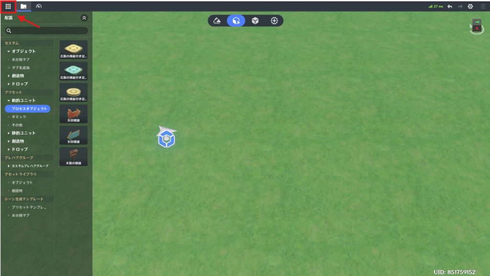
左上のシステムメニューボタンをクリックしてメニュー画面を開きます。
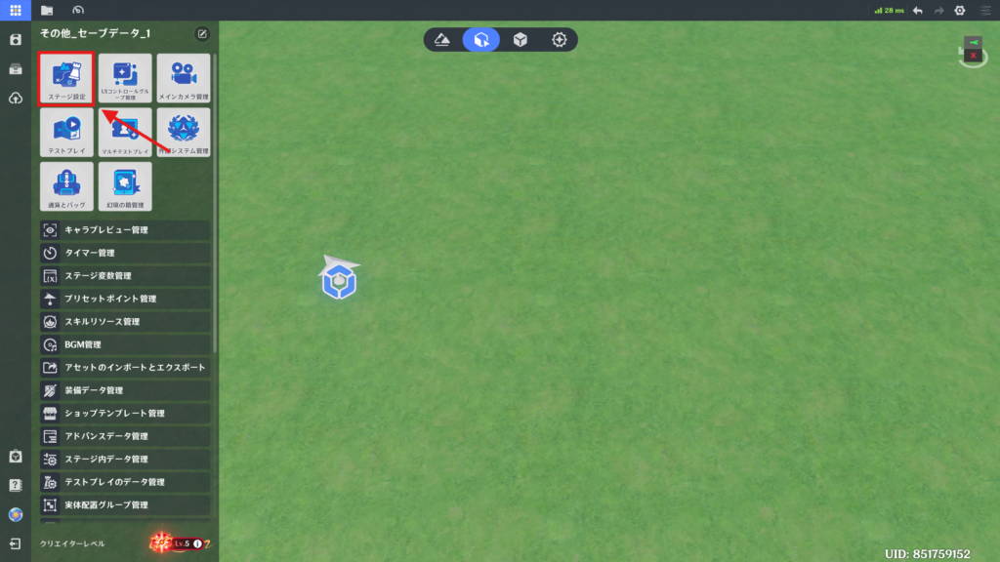
「ステージ設定」をクリックすると、ステージ設定画面が開き、ステージ全体の設定を行うことができます。
⭐2.機能詳細
🌸基礎
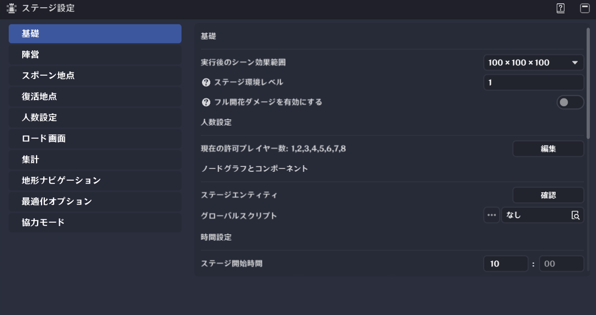
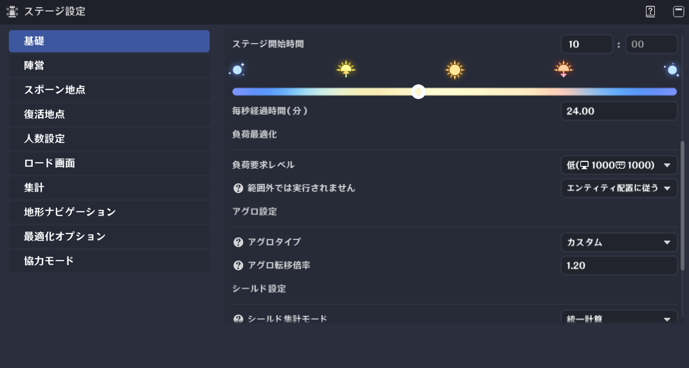
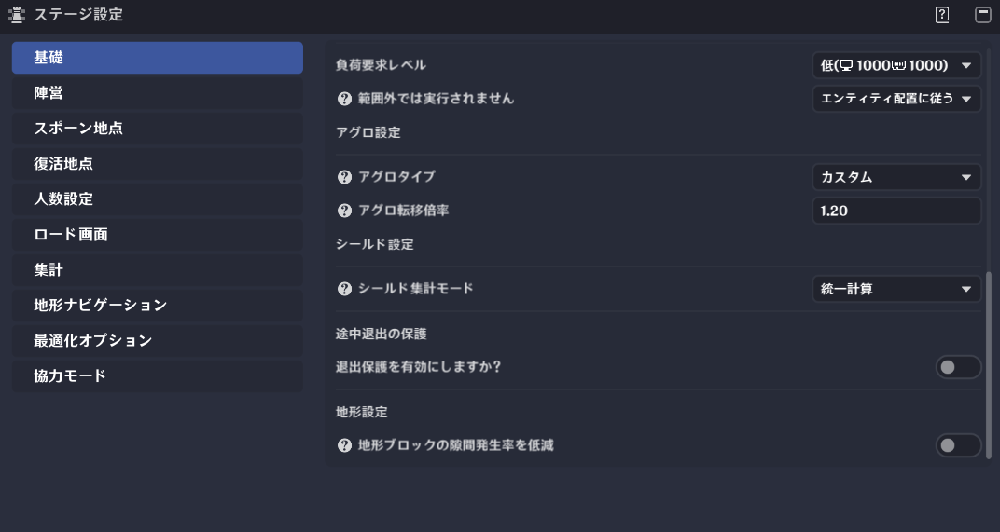
「基礎」では、一般的なステージ設定の構成を行えます。
(1) 実行後のシーン効果範囲
ステージの有効範囲を編集します。
範囲外のコンテンツは反映されません。
そのためステージを範囲内におさめて作成するか、範囲外に出てしまった場合は効果範囲を広げる必要があります。
「カスタム範囲」を押すと任意の範囲を設定できます。
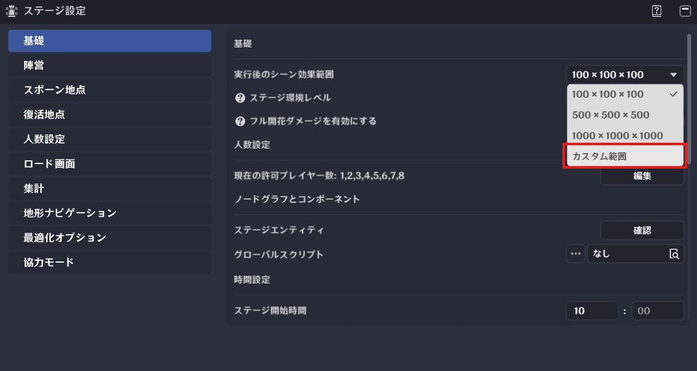
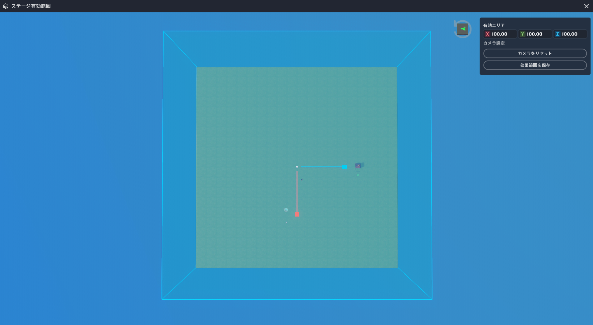
環境レベルは、キャラクター以外を発生源とする草・雷元素反応ダメージ係数に影響します。
レベルが高いほど、係数も高くなります。
対象となる元素反応は、過負荷/超電導/感電/燃焼/拡散/氷砕き/開花/超開花/烈開花/超激化/草激化です。
設定範囲：1-120 キャラクターや創造物のレベルに合わせることが推奨されています。
「フル開花ダメージを有効にする」をオンにすると、デフォルトですべてのユニットに対して、開花系反応ダメージが発生するようになります。
(3) 現在の許可プレイヤー数
「人数設定」で許可した人数設定が表示されます。
(4) ステージエンティティ
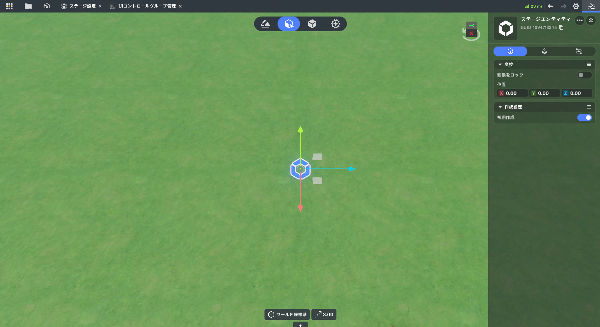
ステージエンティティだけが Down イベントを監視できます。
ステージ開始時の初期時刻と時間の進行速度を設定します。
時間は周囲の環境（月の位置や空の明るさなど）に影響を与えます。
進行速度は、最大で「現実の１秒＝ゲーム内の６０分」まで設定可能です。
(6) 負荷最適化
このステージの負荷要件を設定します。
負荷が高いと、一部のデバイスで正常に動作しない可能性があります。
(7) 範囲外では実行されません
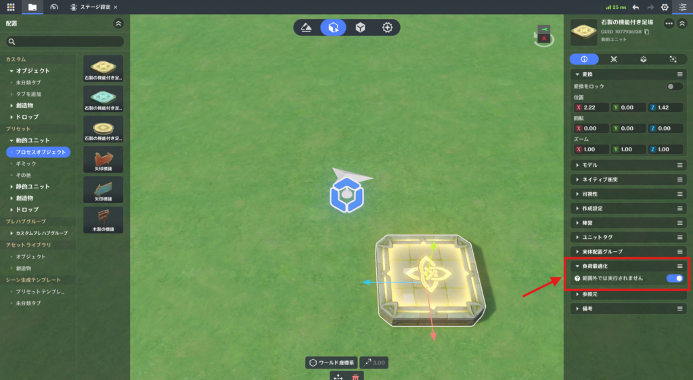
ステージの進行中、「負荷最適化」が有効なエンティティは、プレイヤーから一定の距離を離れるとクライアント上での動作を停止します。
(8) アグロタイプ
ノードによるアグロパラメータの参照や変更はできません。
ノードによるアグロパラメータの参照および変更が可能です。
※アグロは、ヘイトのことです。敵から狙われる度合いの数値。
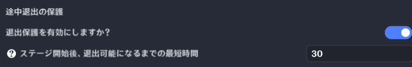
有効にした場合、入力した時間が経過するまではメニューから途中退室できなくなります。
0-180まで入力可能です。
(11) 地形設定
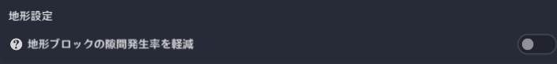
地形コリジョンの最適化機能です。
有効化することで以下の効果があります。
※有効化するとレイキャスト判定の精度へ影響する場合があります。
トリガー判定やスキル命中判定など、レイ検出を使用するゲームでは十分なテストが推奨されています。
オン：地形の隙間を減らし移動を滑らかにするが、レイ判定へ影響する場合あり
オフ：標準コリジョン設定。レイ判定へ影響なし
推奨用途
非推奨用途
🌸陣営
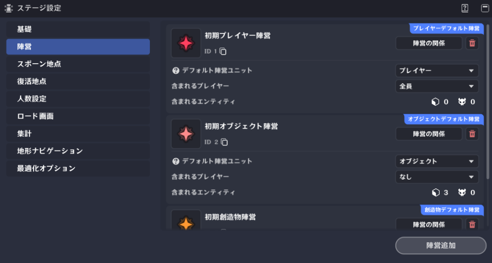
プレイヤー、創造物、オブジェクトが所属する陣営を設定します。
🌸スポーン地点
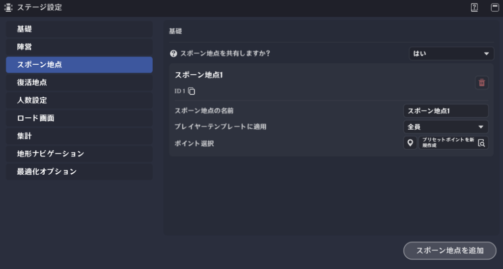
プレイヤーのスポーン地点を設定します。
(1) スポーン地点の共有
有効にすると、複数のプレイヤーが同じスポーン地点を使用できるようになります。
(2) スポーン地点の名前
他の地点と区別しやすいように、このスポーン地点に好きな名前を付けることができます。
(3) プレイヤーテンプレートに適用
このスポーン地点を利用できるプレイヤーテンプレートを選択します。
(4) ポイント選択
ステージ内のプリセットポイントを選択し、スポーン地点として設定します。
(5) スポーン地点を追加
スポーン地点を作成できます。
新しく追加された地点は、デフォルトの「スポーン地点1」と同じ機能を持ちます。
🌸復活地点
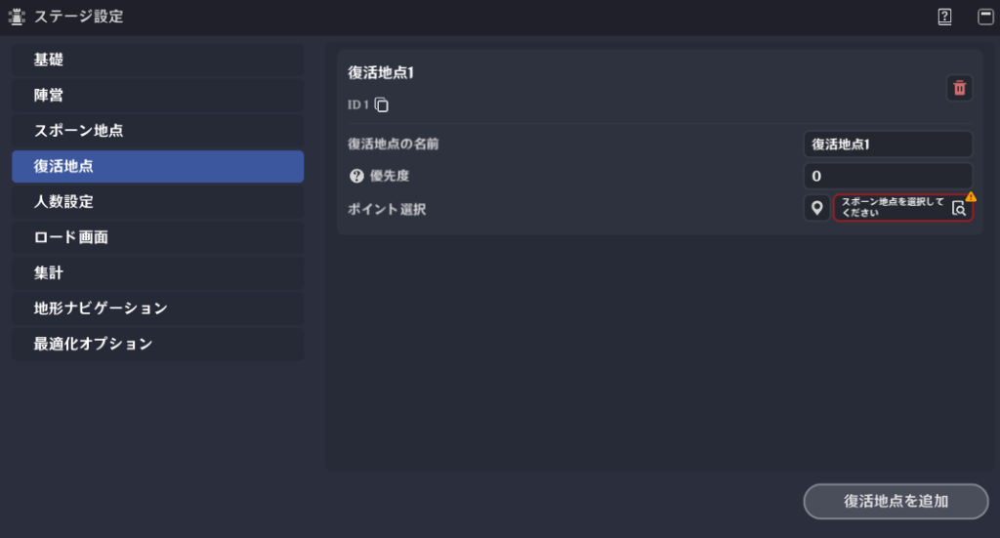
プレイヤーの復活地点を設定します。
初期状態では復活地点のリストは空です。
「復活地点を追加」をクリックして、「復活地点1」を追加してください。
🌸人数設定
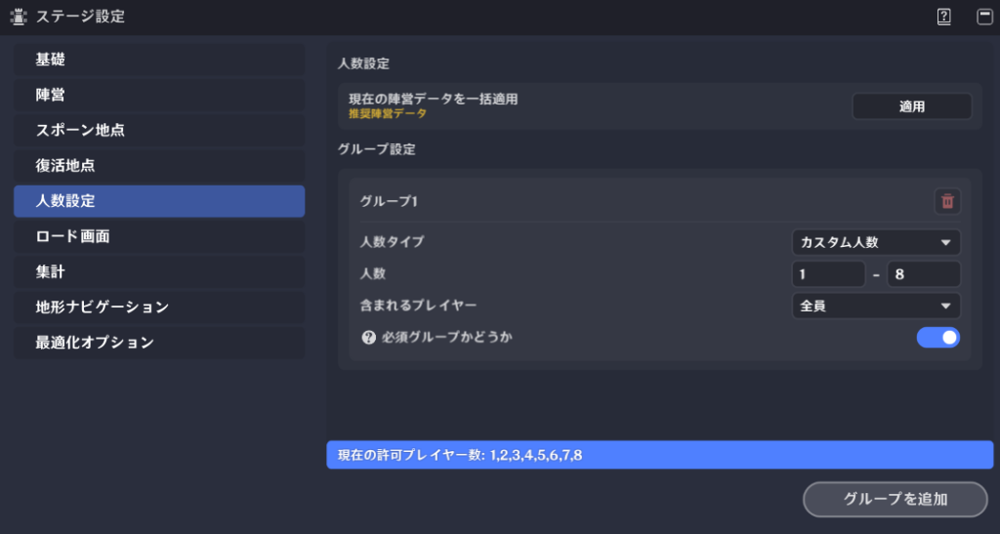
グループ化の目的
現在のマッチング仕様
現在の陣営データを一括適用
各陣営のプレイヤー数に基づいてグループが作成されます。
人数タイプ
人数
グループに属するプレイヤーの数です。
含まれるプレイヤー
グループに対応するプレイヤーを設定します。
必須グループかどうか
無効にすると、このグループにプレイヤーがいなくてもゲームを開始できます。
🌸ロード画面
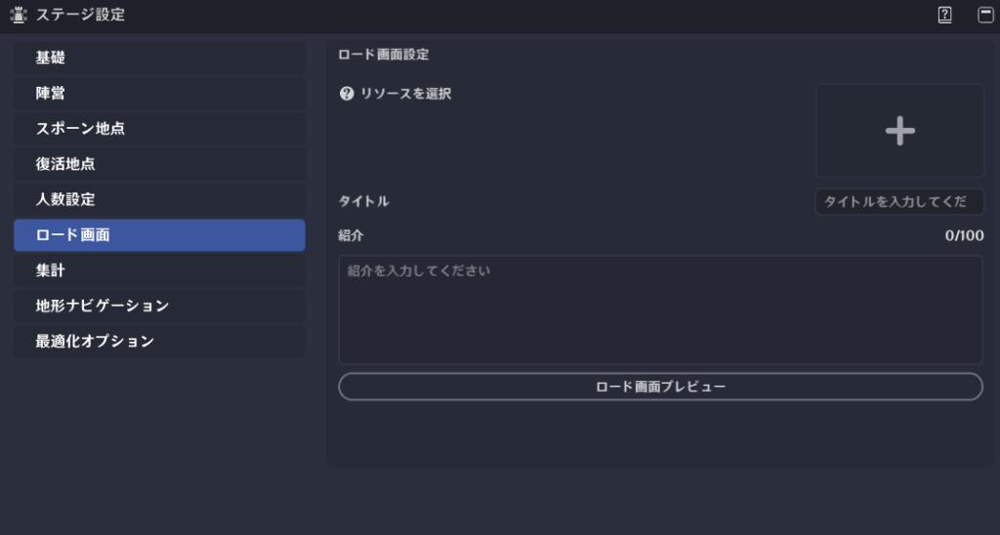
ステージ入場時のロード画面に表示される内容を編集します。
リソースを選択
ロード画面の背景に使用する画像をアップロードしてください。
タイトル/紹介
ロード画面に表示されるテキストです。
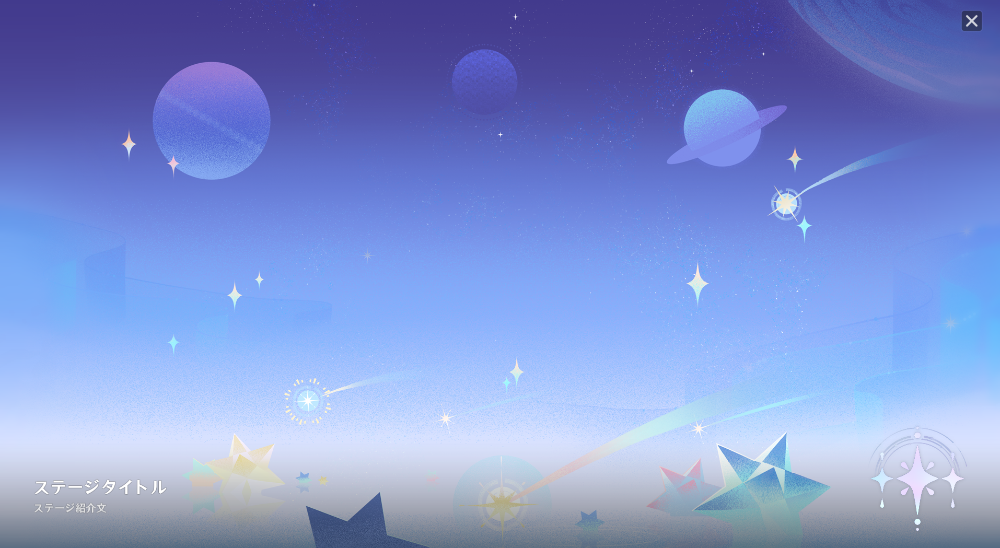
🌸集計
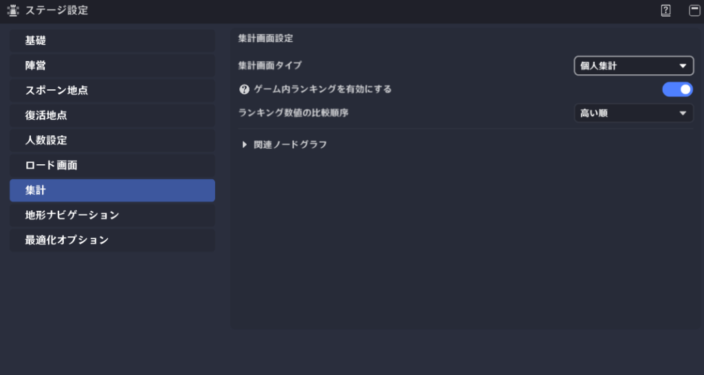
ゲーム終了時のリザルト画面を設定します。
集計画面タイプ
ゲーム内ランキングを有効にする
個人・陣営別リザルトの表示順を決定します。ランキングの数値はノード経由で設定します。
関連ノードグラフ
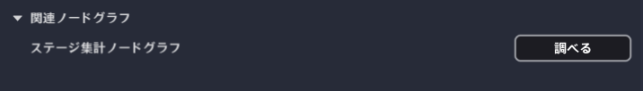
ノードグラフでリザルト関連のノードが設定されている場合、ここから該当のノードグラフへ移動できます。
🌸地形ナビゲーション
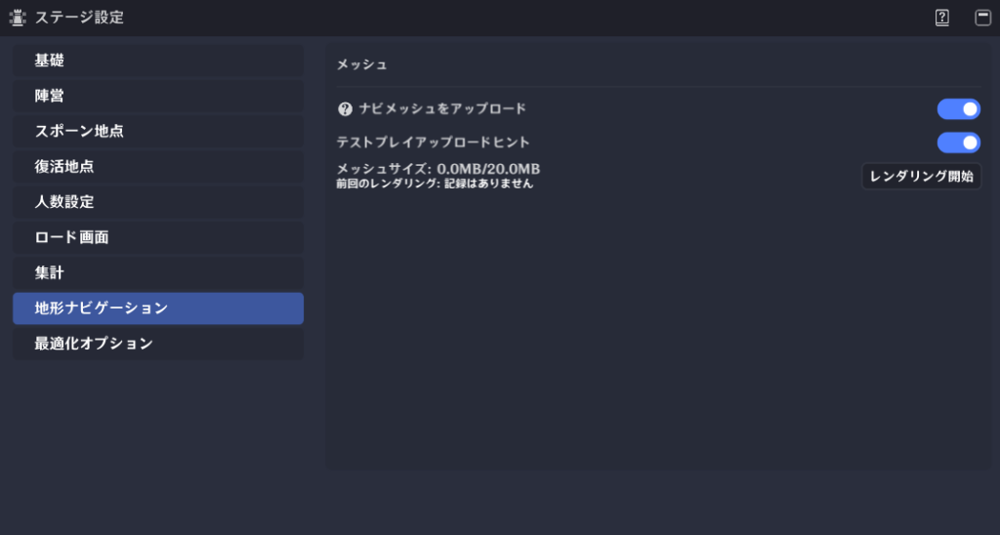
ナビメッシュとは、ゲーム内の歩けるエリアをポリゴンで表した地図で、経路データです。
創造物はこれを利用して、歩行可能なエリアを歩きます。
地形を変更したり、静的オブジェクトを配置し直したりした場合は、レンダリングすることをお勧めします。
創造物が動かない原因はこれにあることが多いです。
幻境ステージによってはこの機能が必要ないこともあると思うので、その場合はオフにしてもらって大丈夫です。
「テストアップロードヒント」をオフにすると、テストプレイ時に毎回聞かれる以下のポップアップが出なくなります。
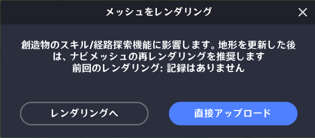
🌸最適化オプション
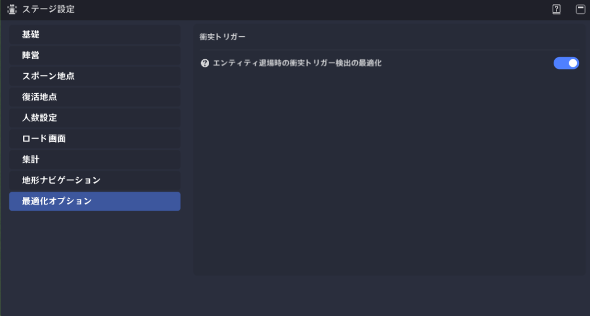
視界外のオブジェクトやプレイヤーが予期せぬ場所から脱出した際の衝突トリガー検出を最適化します。
ただし、この機能によってシステム全体の負荷が増加する可能性があります。